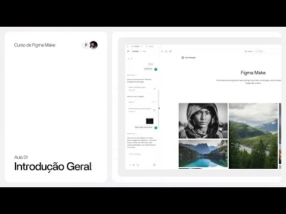
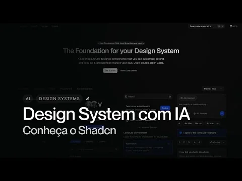

Referências
Agente do Manus que Trabalha no Seu Computador
Por que eu MUDEI do CHATGPT para o CLAUDE?
Organização de Projetos no Figma [Guia 2025]

Design Systems com IA e Shadcn
How to Use Claude Skills as a Designer
Domine as Skills do Claude Code em 17 minutos (e automatize qualquer coisa)
Essa IA cria posts no meu WordPress sozinha (testei e funciona)
Claude Code dentro do Antigravity: o setup que NINGUÉM te mostrou ainda
As NOVAS Skills do Antigravity são INSANAS
Página 8 de 9